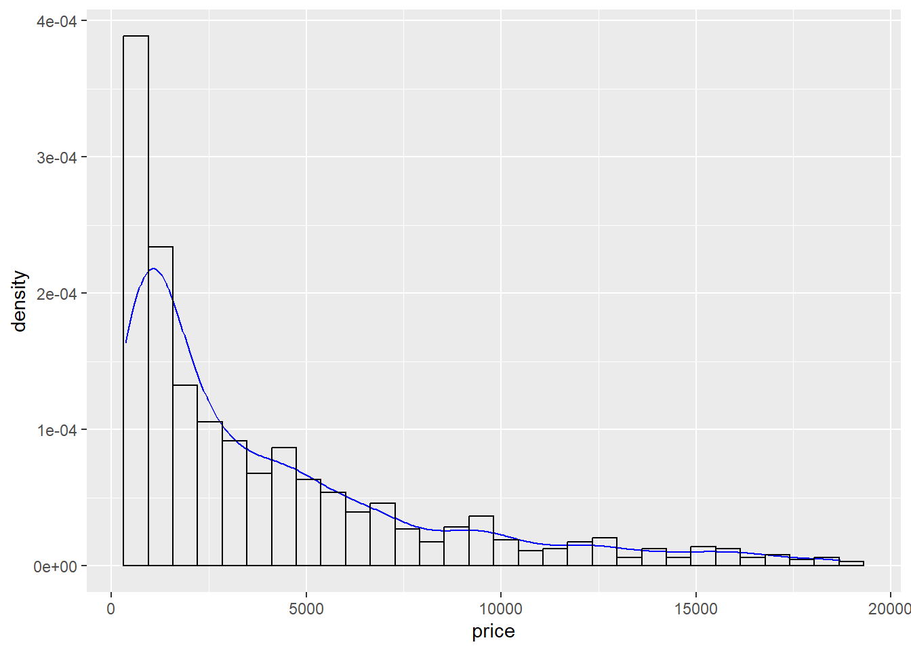
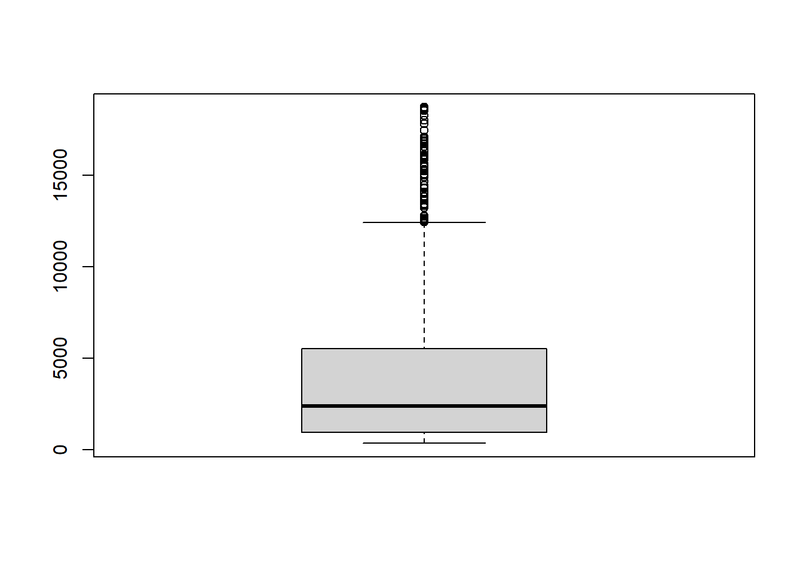
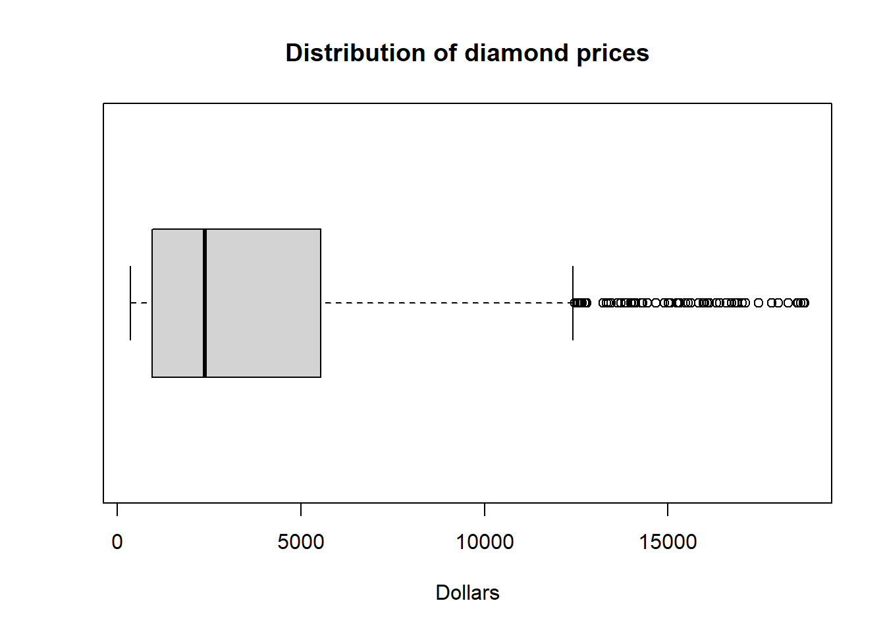
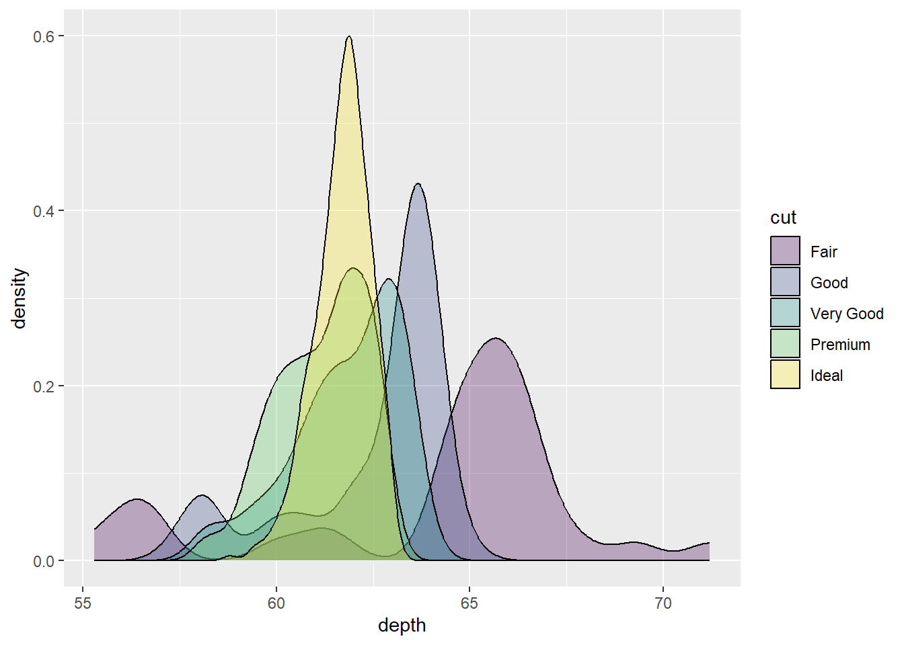

library(ggplot2)
library(sjPlot)
library(ggpubr)
diamonds <- ggplot2::diamonds
set.seed(1410) # Make the sample reproducible
dsmall <- diamonds[sample(nrow(diamonds), 1000), ]6 Creating Plots
Visualizing your data is hands down the most important thing you can learn to do. Seeing is critical to understanding. There are two audiences in mind when creating data visualizations:
- (meh) For your eyes only. These are quick and dirty plots, without annotation. Meant to be looked at once or twice.
- (good) To share with others. Nicer looking plots with more information, but not needing a lot of additional code to create.
- (best) Publication quality. These need to completely stand on their own. Informative captions, axes labels, titles, colors as needed, etc. We won’t spend time on these in this lesson.
The functions from the ggplot2 package, along with those from packages built on ggplot2 such as ggpubr and sjPlot, automatically do a lot of this work for you. They can produce good and better quality plots with very little code and are quite extensible and flexible.
6.1 The syntax of ggplot
The reason we use the functions in ggplot2 is for consistency in the structure of it’s arguments. Here is a bare bones generic plotting function:
ggplot(data, aes(x=x, y=y, col=col, fill=fill, group=group)) + geom_THING() Required arguments
data: What data set is this plot using? This is ALWAYS the first argument.aes(): This is the aesthetics of the plot. What variable is on the x, and what is on the y? Do you want to color by another variable, perhaps fill some box by the value of another variable, or group by a variable.geom_THING(): Every plot has to have a geometry. What is the shape of the thing you want to plot? Do you want to plot point? Usegeom_points(). Want to connect those points with a line? Usegeom_lines(). We will see many varieties in this lesson.
6.2 One categorical variable
Both Nominal and Ordinal data types can be visualized using barcharts or pie charts.
6.2.1 Barchart
A Barchart or barplot takes these frequencies, and draws bars along the X-axis where the height of the bars is determined by the frequencies seen in the table.
We could create a frequency table and then plot the results.
table(dsmall$cut) |> plot()
Using ggplot2 with the geom_bar() geometry layer gives us actual wide bars, and better axis labels.
ggplot(dsmall, aes(x=cut)) + geom_bar()
Using the plot_frq function from the sjPlot package builds on the geom_bar() type plot from ggplot, but adds frequncies and relative percentages on the plot.
plot_frq(dsmall, "cut")
This single graph provides a lot of good information and is a recommended choice to use.
6.2.2 Pie charts
A pie chart is a circular statistical graphic which is divided into slices to illustrate percentages out of a whole. While pie charts are very widely used in the media and business, there are some major drawbacks in that “humans are pretty bad at reading angles” (Ref: The Issue with Pie Chart)
Similar to a barchart, we can convert the results of a table to a pie using base R. But the results are kinda “meh”.
table(dsmall$cut) |> pie()Nicer pie charts using ggplot2 or ggpubr functions require the data set to be pre-aggregated, and so we will come back to these approaches in a later lesson.
6.3 One continuous variable
The price, carat, and depth of the diamonds are all continuous numeric variables. We will see how to plot several types of appropriate visualizations including histograms, density plots, boxplots and violin plots.
6.3.1 Histogram
Rather than showing the value of each observation, we prefer to think of the value as belonging to a bin. The height of the bars in a histogram display the frequency of values that fall into those of those bins.
Since the x-axis is continuous the bars touch. This is unlike the barchart that has a categorical x-axis, and vertical bars that are separated.
hist(dsmall$price)
The base R function hist doesn’t produce a pretty graph, but it’s quick and easy to create.
Using the ggplot2 package we can create a better looking histogram by adding the layer geom_histogram().
ggplot(dsmall, aes(x=price)) + geom_histogram()
In contrast to ggplot2’s common starter code and different geometries, the ggpubr package uses specific functions for each type of plot. The gghistogram package makes a histogram very similar to the ggplot2 default, but with a different theme applied (different appearance). Otherwise it’s the same.
gghistogram(dsmall, x="price")
Variables names in quotes
This is a feature of ggpubr functions - variable names are always in quotes.
6.3.2 Density curves
To get a better idea of the true shape of the distribution we can “smooth” out the bins and create what’s called a density plot or curve. Notice that the shape of this distribution curve is much… “wigglier” than the histogram may have implied.
density(dsmall$price) |> plot()
Similar to hist, plotting the density of a variable does create a plot, but it’s pretty meh.
With ggplot2 we use the geom_density() geometry to produce a nicer looking density plot with minimal additional code.
ggplot(dsmall, aes(x=price)) + geom_density()
And the ggdensity function from the ggpubr package creates a very similar density plot with a different default theme.
ggdensity(dsmall, x="price")6.3.3 Boxplots
Another very common way to visualize the distribution of a continuous variable is using a boxplot. Boxplots are useful for quickly identifying where the bulk of your data lie. R specifically draws a “modified” boxplot where values that are considered outliers are plotted as dots.
Notice that the only axis labeled is the y=axis. Like a dotplot the x axis, or “width”, of the boxplot is meaningless here. We can make the axis more readable by flipping the plot on its side.
boxplot(dsmall$price) # left plot
boxplot(dsmall$price, # right plot
horizontal = TRUE,
main="Distribution of diamond prices",
xlab="Dollars")

Horizontal is a bit easier to read in my opinion.
With ggplot you can create either a horizontal or vertical boxplot by specifying your numeric variable to be on either x or y . Notice the middle of the box is centered on 0, this is just a placeholder. This axis has no inherent meaning.
ggplot(dsmall, aes(x=price)) + geom_boxplot() # left
ggplot(dsmall, aes(y=price)) + geom_boxplot() # right

You can also make a boxplot using the ggbpxplot function from the ggpubr package, however it you must specify that the quantitative variable is on the y axis.
ggboxplot(dsmall, y="price")
ggboxplot(dsmall, x="price")Error in (function (fun, data, x, y, combine = FALSE, merge = FALSE, color = "black", : argument "y" is missing, with no default6.3.3.1 New variable
Before we move on, I want to see price displayed as ranges of 5,000 instead of a continuous measure from 0 to 20,000. I will us the cut_width function to create a new categorical variable here called price_range. See this page for this, and other functions in ggplot that discretize numeric data into categorical.
dsmall$price_range <- cut_width(dsmall$price/1000, width=5)Notice I also divided price by 1000, so 2.5 means 2500. Now that price_range is a categorical variable, I can create a barchart to visualize the frequencies of each bin.
ggplot(dsmall, aes(x=price_range)) + geom_bar()
6.4 Categorical v. Categorical
6.4.0.1 Two-way Tables
Cross-tabs, cross-tabulations and two-way tables (all the same thing, different names) can be created by using the table() function.
6.4.0.2 Frequency table
The frequency table is constructed using the table() function.
table(dsmall$cut, dsmall$price_range)
[-2.5,2.5] (2.5,7.5] (7.5,12.5] (12.5,17.5] (17.5,22.5]
Fair 15 13 4 1 1
Good 41 45 8 5 0
Very Good 108 78 22 12 0
Premium 111 86 35 20 5
Ideal 237 103 34 14 2There are 4 Fair diamonds that cost between 7.5 and 12.5 thousand dollars, and 103 Ideal quality diamonds that cost between 2.5 and 7.5k.
6.4.0.2.1 Cell proportions
Wrapping prop.table() around a table gives you the cell proportions.
table(dsmall$cut, dsmall$price_range) |> prop.table()
[-2.5,2.5] (2.5,7.5] (7.5,12.5] (12.5,17.5] (17.5,22.5]
Fair 0.015 0.013 0.004 0.001 0.001
Good 0.041 0.045 0.008 0.005 0.000
Very Good 0.108 0.078 0.022 0.012 0.000
Premium 0.111 0.086 0.035 0.020 0.005
Ideal 0.237 0.103 0.034 0.014 0.002- 1.5% of all diamonds are Fair cut and cost under 2.5k.
- 0.5% of all diamonds are Premium cut and cost over 17.5k
6.4.0.2.2 Row proportions
To get the row proportions, specify margin=1. The percentages now add up to 1 across the rows.
table(dsmall$cut, dsmall$price_range) |> prop.table(margin=1) |> round(3)
[-2.5,2.5] (2.5,7.5] (7.5,12.5] (12.5,17.5] (17.5,22.5]
Fair 0.441 0.382 0.118 0.029 0.029
Good 0.414 0.455 0.081 0.051 0.000
Very Good 0.491 0.355 0.100 0.055 0.000
Premium 0.432 0.335 0.136 0.078 0.019
Ideal 0.608 0.264 0.087 0.036 0.005- 44.1% of Fair quality diamonds cost under 2.5k
- 1.9% of Premium quality diamonds cost over 17.5k.
6.4.0.2.3 Column proportions
To get the column proportions, you specify margin=2. The percentages now add up to 1 down the columns.
table(dsmall$cut, dsmall$price_range) |> prop.table(margin=2) |> round(3)
[-2.5,2.5] (2.5,7.5] (7.5,12.5] (12.5,17.5] (17.5,22.5]
Fair 0.029 0.040 0.039 0.019 0.125
Good 0.080 0.138 0.078 0.096 0.000
Very Good 0.211 0.240 0.214 0.231 0.000
Premium 0.217 0.265 0.340 0.385 0.625
Ideal 0.463 0.317 0.330 0.269 0.250- 8% of diamonds that cost under 2.5k are of Good quality
- 25% of diamonds that cost over 17.5k are Ideal quality
6.4.0.3 Grouped bar charts
To compare proportions of one categorical variable within the same level of another, is to use grouped barcharts.
Plot the cut on the x axis, but then fill using the second categorical variable. This has the effect of visualizing the row percents from the table above. Here it is the percent of price_range, within each type of cut.
ggplot(dsmall, aes(x=cut, fill=price_range)) + geom_bar()
The default is a stacked barchart. So add the argument position=dodge inside the geom_bar layer to put the bars side by side.
ggplot(dsmall, aes(x=cut, fill=price_range)) + geom_bar(position = "dodge")
And look, an automatic legend. What if I wanted to better compare cut within price range? This is the column percentages. Just switch which variable is the x axis and which one is used to fill the colors!
ggplot(dsmall, aes(x=price_range, fill=cut)) + geom_bar(position = "dodge")
And this easy change is why we love ggplot2.
6.5 Two continuous variables
Visualizing the relationship between two continuous variables is done using a scatterplot. Let’s compare the carat of a diamond to it’s price.
Using the generic plot(x, y) function we get a good enough, but kinda ‘meh’ scatterplot with carat on the x axis and price on the y axis.
plot(dsmall$carat, dsmall$price)
With ggplot we specify both the x and y variables, and add geom_point geometry layer.
ggplot(dsmall, aes(x=carat, y=price)) + geom_point()The ggscatter function creates a similar scatterplot. Notice again that the variable names must be in quotes, compared to not in quotes when using ggplot2.
ggscatter(dsmall, x="carat", y="price")
6.6 One continuous vs. one categorical
The tactic here is to create an appropriate plot for a continuous variable, and plot it for each level of the categorical variable by shading or coloring the lines depending on the level.
6.6.1 Histograms
6.6.2 Density curves
You could fill the density curves depending on the group, but then it’s hard to see overlap.
ggplot(dsmall, aes(x=depth, fill=cut)) + geom_density()
We can adjust the transparency of the density curve by applying a value to alpha inside the density layer. Alpha is a measure of transparency, from 0=clear to 1=opaque.
ggplot(dsmall, aes(x=depth, fill=cut)) + geom_density(alpha=.3)
Now we can see that there are some premium cut diamonds with depths around 62. This peak was hidden from us before.
You could also just color the lines and leave the fill alone.
ggplot(dsmall, aes(x=depth, color=cut)) + geom_density()
We won’t talk about changing colors or the background in this lab, but the yellow is pretty hard to read.
6.6.2.1 Using ggpubr
The ggdensity function also has a color and fill option. In addition to moving the legend to the top of the plot, the transparency of the density plots are automatically
ggdensity(dsmall, x="depth", color = "cut")
ggdensity(dsmall, x="depth", fill = "cut")

6.6.3 Boxplots
To create basic grouped boxplots, put the continuous variable on one axis, and the categorical on the other axis.
ggplot(dsmall, aes(x=price, y=cut)) + geom_boxplot()
ggplot(dsmall, aes(x=cut, y=carat)) + geom_boxplot()

If you want an additional color feature (and the corresponding legend), you can either fill or color the boxes by the same categorical variable.
ggplot(dsmall, aes(x=price, y=cut, fill = cut)) + geom_boxplot() # left
ggplot(dsmall, aes(x=cut, y=carat, color = cut)) + geom_boxplot() # right